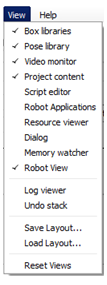

Choregraphe layout¶
Displaying / hiding panels¶
From the View menu, click the panel to display or hide.
Each panel that is already displayed is marked.
Moving panels¶
To move a panel, drag it by its title bar.
Tip: to prevent a panel to dock automatically, press Control before dragging it.
According to the place you dragged it, the panel can:
Take another corner of the Choregraphe window.

Overlap another panel. Tabs appear in order to let you switch between the 2 panels.

Click the resize button to obtain a floating window.

Saving and loading Layouts¶
To save the current position of all panels:
- Choose View > Save Layout...
To display the panels as you previously saved them:
- Choose View > Load Layout...
To come back to the default Layout:
- Choose View > Reset Views.